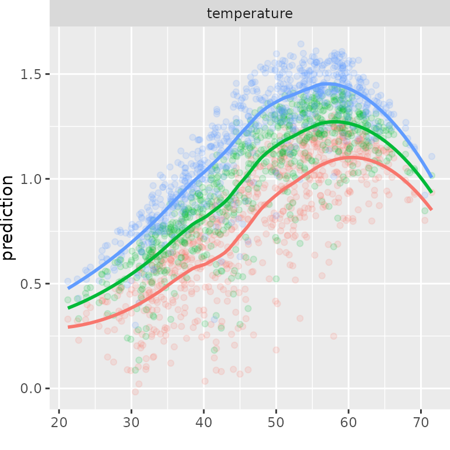
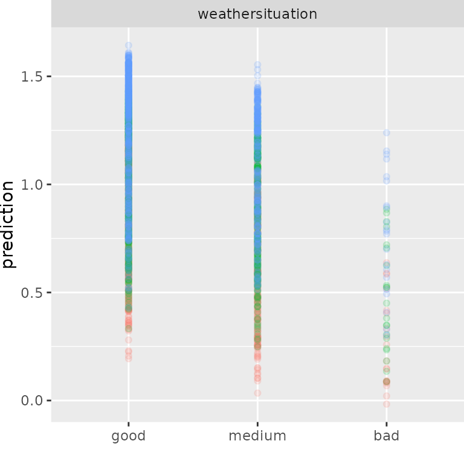

D-vine quantile regression with discrete variables: analysis of bike rental data
Dani Kraus and Thomas Nagler
November 8, 2017
Source:vignettes/bike-rental.Rmd
bike-rental.RmdPlot function for marginal effects
plot_marginal_effects <- function(covs, preds) {
cbind(covs, preds) %>%
tidyr::gather(alpha, prediction, -seq_len(NCOL(covs))) %>%
dplyr::mutate(prediction = as.numeric(prediction)) %>%
tidyr::gather(variable, value, -(alpha:prediction)) %>%
dplyr::mutate(value = as.numeric(value)) %>%
ggplot(aes(value, prediction, color = alpha)) +
geom_point(alpha = 0.15) +
geom_smooth(span = 0.5, se = FALSE) +
facet_wrap(~ variable, scale = "free_x") +
theme(legend.position = "none") +
theme(plot.margin = unit(c(0, 0, 0, 0), "mm")) +
xlab("")
}Data preparation
Load data
## instant dteday season yr mnth holiday weekday workingday weathersit
## 1 1 2011-01-01 1 0 1 0 6 0 2
## 2 2 2011-01-02 1 0 1 0 0 0 2
## 3 3 2011-01-03 1 0 1 0 1 1 1
## 4 4 2011-01-04 1 0 1 0 2 1 1
## 5 5 2011-01-05 1 0 1 0 3 1 1
## 6 6 2011-01-06 1 0 1 0 4 1 1
## temp atemp hum windspeed casual registered cnt
## 1 0.344167 0.363625 0.805833 0.1604460 331 654 985
## 2 0.363478 0.353739 0.696087 0.2485390 131 670 801
## 3 0.196364 0.189405 0.437273 0.2483090 120 1229 1349
## 4 0.200000 0.212122 0.590435 0.1602960 108 1454 1562
## 5 0.226957 0.229270 0.436957 0.1869000 82 1518 1600
## 6 0.204348 0.233209 0.518261 0.0895652 88 1518 1606Show trend
ggplot(bikedata, aes(dteday, count)) +
geom_line() +
scale_x_date(labels = scales::date_format("%b %y")) +
xlab("date") +
ylab("rental count") +
stat_smooth(method = "lm", se = FALSE, linetype = "dashed") +
theme(plot.title = element_text(lineheight = 0.8, face = "bold", size = 20)) +
theme(text = element_text(size = 18))
Remove trend
lm_trend <- lm(count ~ instant, data = bikedata)
trend <- predict(lm_trend)
bikedata <- mutate(bikedata, count = count / trend)
ggplot(bikedata, aes(dteday, count)) +
geom_line() +
scale_x_date(labels = scales::date_format("%b %y")) +
xlab("date") +
ylab("detrended rental count") +
theme(plot.title = element_text(lineheight = 0.8, face = "bold", size = 20)) +
theme(text = element_text(size = 18))D-vine regression model
Fit model
## D-vine regression model: count | temperature, humidity, windspeed, month, season, weathersituation, workingday, weekday
## nobs = 731, edf = 66.42, cll = 424.25, caic = -715.66, cbic = -410.5
summary(fit)## var edf cll caic cbic p_value
## 1 count 9.59683 -198.076002 415.345665 459.43747 NA
## 2 temperature 21.96135 415.792948 -787.663199 -686.76369 1.076638e-161
## 3 humidity 17.92531 119.002570 -202.154520 -119.79823 2.012538e-40
## 4 windspeed 1.00000 22.851447 -43.702894 -39.10848 1.376193e-11
## 5 month 1.00000 13.820625 -25.641250 -21.04684 1.460312e-07
## 6 season 1.00000 11.237830 -20.475661 -15.88125 2.128233e-06
## 7 weathersituation 1.00000 13.284465 -24.568930 -19.97452 2.543006e-07
## 8 workingday 1.00000 9.607241 -17.214481 -12.62007 1.168238e-05
## 9 weekday 11.93605 16.727094 -9.582084 45.25707 7.912733e-04Marginal effects
plot_marginal_effects(
covs = select(bikedata, temperature),
preds = pred
)

plot_marginal_effects(covs = select(bikedata, windspeed), preds = pred) 
month_labs <- c("Jan","", "Mar", "", "May", "", "Jul", "", "Sep", "", "Nov", "")
plot_marginal_effects(covs = select(bikedata, month), preds = pred) +
scale_x_discrete(limits = 1:12, labels = month_labs)
plot_marginal_effects(covs = select(bikedata, weathersituation),
preds = pred) +
scale_x_discrete(limits = 1:3,labels = c("good", "medium", "bad"))
weekday_labs <- c("Mon", "Tue", "Wed", "Thu", "Fri", "Sat", "Sun")
plot_marginal_effects(covs = select(bikedata, weekday), preds = pred) +
scale_x_discrete(limits = 1:7, labels = weekday_labs)
plot_marginal_effects(covs = select(bikedata, workingday), preds = pred) +
scale_x_discrete(limits = 0:1, labels = c("no", "yes")) +
geom_smooth(method = "lm", se = FALSE) +
xlim(c(0, 1))
season_labs <- c("spring", "summer", "fall", "winter")
plot_marginal_effects(covs = select(bikedata, season), preds = pred) +
scale_x_discrete(limits = 1:4, labels = season_labs)